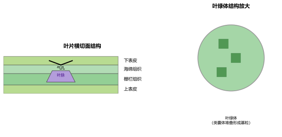

专题一：细胞的结构与功能
细胞学植物细胞结构：细胞壁（保护支持）、细胞膜（控制物质进出）、细胞质、细胞核（含遗传物质）、叶绿体（光合作用）、液泡（含细胞液）。动物细胞：有细胞膜、细胞质、细胞核，无细胞壁、液泡、叶绿体。细胞存活的条件：细胞膜要保持完整（控制物质进出）。细胞的生活：细胞膜控制物质进出→线粒体提供能量→叶绿体（植物）制造有机物→细胞核控制生命活动。

专题二：生物体的结构层次
结构层次细胞分裂：一个细胞分成两个。染色体先复制后均分，保证子细胞与母细胞染色体数目相同。细胞生长：细胞体积增大。细胞分化：形成形态功能不同的细胞群。组织：由形态相似、结构和功能相同的细胞联合在一起。植物组织：保护组织、营养组织、分生组织、输导组织。动物组织：上皮组织、肌肉组织、神经组织、结缔组织。器官：不同组织按一定次序组合成。植物六大器官：根茎叶（营养）、花果实种子（繁殖）。系统：动物体由八大系统构成。
专题三：绿色植物的光合作用与呼吸作用
植物学光合作用：CO₂+H₂O→有机物+O₂（光、叶绿体）。场所：叶绿体。实质：合成有机物储存能量。呼吸作用：有机物+O₂→CO₂+H₂O+能量（有光无光均可）。场所：线粒体。实质：分解有机物释放能量。光合作用与呼吸作用的关系：互相依存、对立统一。白天光合作用>呼吸作用（有机物积累）；晚上只呼吸作用（有机物消耗）。应用：合理密植（充分利用光）、温室增施CO₂（提高产量）、低温/干燥储存粮食（抑制呼吸）。叶片结构：表皮(保护)→栅栏组织(叶绿体多)→海绵组织→叶脉(输导)→气孔(蒸腾/气体交换)。

专题四：人体消化与呼吸系统
人体生理消化系统：口腔(淀粉初步消化)→食道→胃(蛋白质初步消化)→小肠(主要消化和吸收)→大肠(吸收水分)→肛门。三大营养物质的消化：淀粉→麦芽糖→葡萄糖；蛋白质→多肽→氨基酸；脂肪→脂肪微粒→甘油+脂肪酸。小肠适于吸收的特点：长(5-6m)、表面积大(皱襞和绒毛)、壁薄(仅一层细胞)、有丰富毛细血管。呼吸系统：鼻→咽→喉→气管→支气管→肺。肺泡适于气体交换的特点：数量多、壁薄(一层细胞)、壁外有丰富毛细血管。气体交换：肺泡与血液之间氧气和二氧化碳通过扩散作用交换。

专题五：人体循环与泌尿系统
人体生理血液循环：体循环（左心室→主动脉→全身→上下腔静脉→右心房）和肺循环（右心室→肺动脉→肺→肺静脉→左心房）。血液：血浆(90%水)+血细胞。红细胞（含血红蛋白，运输氧）、白细胞（吞噬病菌，免疫）、血小板（止血凝血）。血管类型：动脉（离心、壁厚、血流快）、静脉（回心、有瓣膜、血流慢）、毛细血管（壁薄、单行通过）。泌尿系统：肾脏(形成尿液)→输尿管→膀胱(暂时储存)→尿道。尿液形成：肾小球过滤（形成原尿，除血细胞和大分子蛋白）→肾小管重吸收（全部葡萄糖、大部分水、部分无机盐回血液）→形成终尿。
专题六：人体神经与内分泌系统
人体生理神经系统：中枢神经系统（脑+脊髓）和周围神经系统（脑神经+脊神经）。神经元：神经细胞，包括细胞体和突起（树突、轴突）。反射：通过神经系统对外界刺激做出的规律性反应。反射弧：感受器→传入神经→神经中枢→传出神经→效应器。非条件反射：生来就有（缩手反射、膝跳反射）。条件反射：后天学习形成（望梅止渴、听到铃声分泌唾液）。内分泌系统：分泌激素。生长激素（垂体，促进生长）、甲状腺激素（促进代谢和发育）、胰岛素（胰岛，降低血糖—糖尿病）、肾上腺激素（心跳加快）。
专题七：生殖与发育
生殖发育男性生殖系统：睾丸(产生精子、分泌雄性激素)、附睾、输精管、精囊、前列腺。女性生殖系统：卵巢(产生卵细胞、分泌雌性激素)、输卵管(受精场所)、子宫(胚胎发育场所)、阴道。受精与发育：精子和卵细胞在输卵管结合形成受精卵→分裂分化→植入子宫内膜(着床)→发育成胎儿→分娩。青春期发育：身高突增（显著特征）、生殖器官发育成熟（第一性征）、出现第二性征（女生乳房发育、男生喉结变声）、月经/遗精现象。青春期心理：独立意识增强、情绪波动大，要正确与异性交往。
专题八：遗传与变异
遗传学遗传：亲子间的相似性。变异：亲子间及子代个体间的差异。基因、DNA、染色体：染色体位于细胞核中，由DNA和蛋白质组成。基因是有遗传效应的DNA片段。体细胞中染色体成对存在（人体23对），生殖细胞中成单存在（23条）。基因的显性和隐性：显性基因(大写字母)控制显性性状，隐性基因(小写字母)控制隐性性状。Dd×Dd→DD:Dd:dd=1:2:1，显性:隐性=3:1。性别决定：XX女、XY男。生男生女由父亲决定（概率各50%）。可遗传与不可遗传变异：由遗传物质改变引起的可遗传（基因突变、染色体变异），仅由环境引起的不遗传。
专题九：生物进化
进化生命起源：原始大气→有机小分子→有机大分子→原始生命→原始单细胞生物（米勒实验证明无机物可形成氨基酸）。生物进化历程：由简单到复杂、由低等到高等、由水生到陆生。进化树：原始生命→藻类→苔藓→蕨类→种子植物（裸子→被子）；原始生命→无脊椎动物→鱼类→两栖类→爬行类→鸟类/哺乳类。自然选择（达尔文）：过度繁殖→生存斗争→遗传变异→适者生存。长颈鹿、抗药性细菌的形成：自然选择的结果。
专题十：生态系统与生物圈
生态生态系统的组成：生物部分（生产者/消费者/分解者）+非生物部分（阳光/空气/水/土壤/温度等）。食物链和食物网：起点是生产者，箭头指向捕食者（能量流动方向）。物质和能量沿食物链流动，能量逐级递减（10%~20%传递效率），所以食物链一般不超过5个营养级。生态平衡：生态系统具有自动调节能力（有一定限度）。生物圈：地球上最大的生态系统（大气圈底部+水圈大部+岩石圈表面）。生物圈Ⅱ号实验：证明了目前人类无法建立替代地球的封闭生态系统。保护生物圈是每个人的责任。